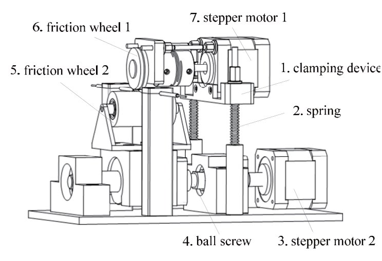

Academic bedside robots · shu_li2018
SHU friction-wheel
Shanghai University master-slave vascular interventional surgery robot (friction-wheel slave, catheter-handling master)

1 / 3


- Family
- Academic bedside robots (academic)
- Devices
- one catheter or guidewire (Sec. II); bench tests drove a catheter (Sec. III)
- Degrees of freedom
- 2 (axial, circumferential) (Sec. II-C)
- Push
- Friction rollers
- Twist
- Other
- Tested up to
- Bench
- Sim-to-real
- None found — No simulation-trained controller found for this robot.
Testing
- Highest level
- Bench
- What was tested
- bench accuracy only: master inputs of 2, 5, 8, 10, 20 mm and 20, 45, 60, 90, 120 deg, 10 repeats each, slave output measured with an infrared range sensor and a light spot; several master-slave ratios (Sec. III-IV, Figs. 5-6, Tables I-III)
- Key numbers
- position accuracy 0.17-0.60 mm (repeatability 0.07-0.14 mm) over 2-20 mm; angle accuracy 0.27-0.88 deg (repeatability 0.10-0.18 deg) over 20-120 deg (Tables I-II)
Mechanism
- Push (translation)
- friction-roller: stepper motor 1 turns friction wheel 1; a spring clamping device presses the two wheels on the device (Sec. II-C, Figs. 3-4)
- Twist (rotation)
- stepper motor 2 drives a ball screw that slides friction wheel 2 sideways, rolling the device in the groove of wheel 1 (Sec. II-C, Fig. 3(b))
- Device range
- N.R.
- Target anatomy
- general vascular intervention; no anatomy tested (li2018_design Sec. I-II)
Sensing and interface
- Force sensing
- force detection at the catheter front end and a force-feedback device at the master are part of the system architecture (Sec. II-A, Fig. 1); not evaluated
- Leader and haptics
- custom master: the operator moves a real catheter between two spring-pressed friction wheels read by an encoder (axial) and turns an operating tube on a rotary encoder (rotation); force-feedback device described, not evaluated (Sec. II-A-B, Fig. 2)
- Imaging
- N.R. (DSA appears only in the architecture drawing, Fig. 1)
- Sterility
- N.R.
Size
- Footprint (mm)
- N.R.
- Mass (kg)
- N.R.
Simulation
- Simulation model
- none found
- Sim-trained controller
- none found
Versions
- Lineage
- 2018 IEEE ROBIO prototype (li2018_design, doi:10.1109/ROBIO.2018.8664841); title only in a page-1 render (the text layer has no title)
Sources
- Design and Performance Evaluation of a Novel Vascular Interventional Surgery Robot · 2018 IEEE International Conference on Robotics and Biomimetics (ROBIO), 2018 · doi:10.1109/robio.2018.8664841 [li2018_design]
Notes
- Notes
- 2026-11-08 X3: new row from the hand-downloaded ROBIO 2018 paper. Different group from tianjin_song2023 (Tianjin Univ. of Technology) although both use an encoder-read real catheter as the master handle. No later paper of this robot found in lit/ (grep 'Yingzhong Tian')
This record
- Read level
- full — full (li2018_design,; text decoded per font, title from a page-1 render)
- Picture
- li2018_design Fig. 4 (structure of slave manipulator), p. 178, IEEE ROBIO 2018 doi:10.1109/ROBIO.2018.8664841 ↗ — licence: publisher copyright (IEEE); grade C
- Picture changes
- page region rendered at the embedded strips' native scale (3.32 px/pt, 239 dpi; the figure is stored as ten 714 px strips plus vector labels); caption excluded; nothing erased; not upscaled
- Found by
- gap: Gap searches for robots the other searches missed.
- Data
- JSON · YAML:
records/robots/shu_li2018.yaml - Correction
- Suggest a correction [repository not created yet]